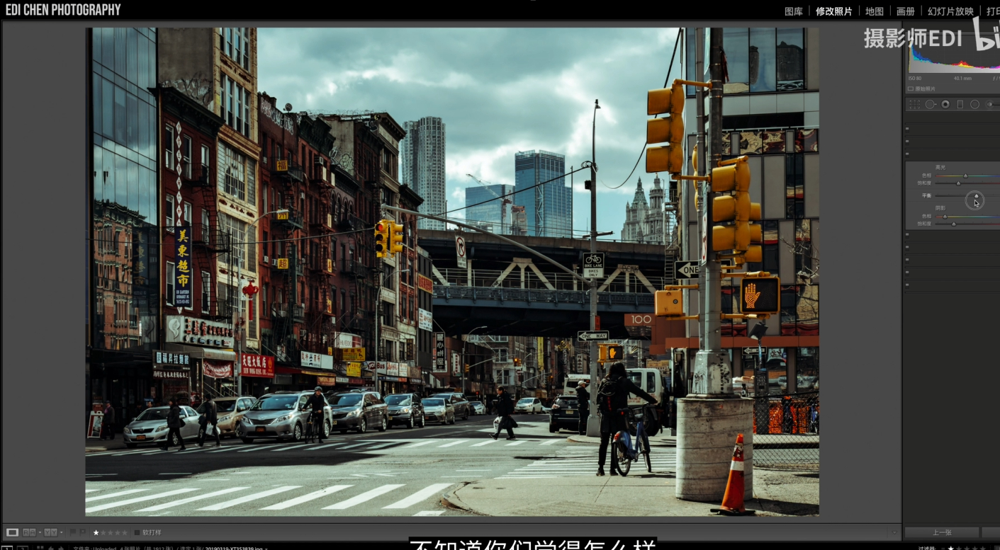
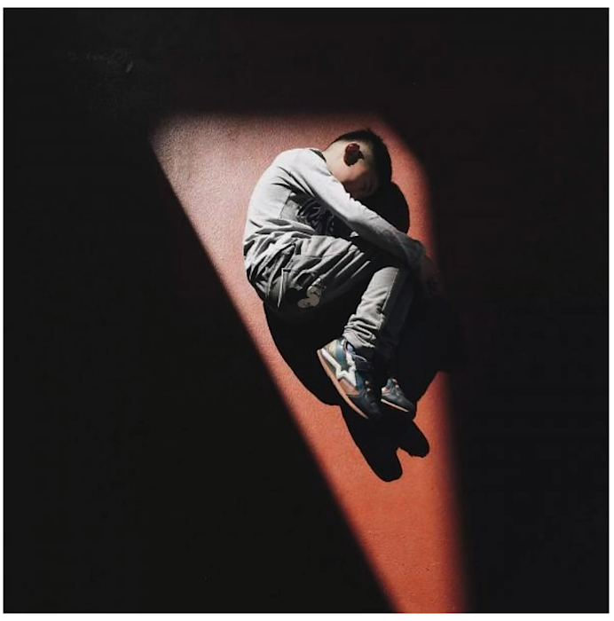
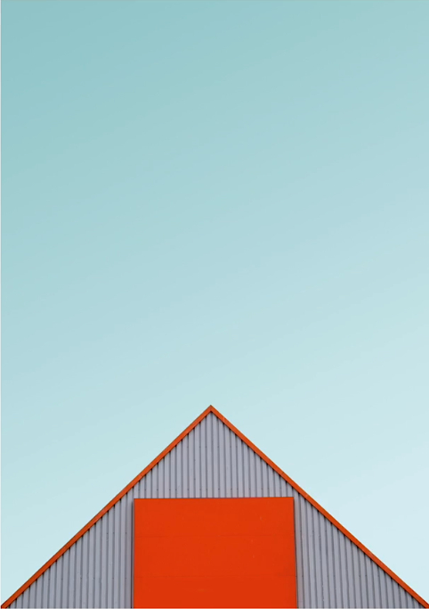

影视后期相关之拍摄
调色相关
注：调色场景并不是绝对一定，掌握住要点，针对不同照片的具体展现形式，不同的调整才是关键所在。
青橙色调
- 适合场景：
- 白天和夜景的大部分场景
- 画面中具备天空、大海等青蓝色元素，和肤色，灯光等橙色元素即可
- 一种调整细节思路
- HSL界面（主要关注色相饱和度）：
- 红色和黄色色相往橙色偏
- 橙色色相（稍微）偏一点红色，饱和度提升。有人的话，橙色调整需要额外注意，因为橙色会改人物的肤色。
- （如果有）树叶草坪等元素：色相往黄色偏，饱和度降低。
- 青色和蓝色：色相往 中间偏 ，饱和度酌情提升
- 校准页面（Camera RAW 和 Lightroom修改）
- 红颜色右移，红颜色饱和度左移
- 蓝颜色左移，蓝颜色饱和度右移
- HSL界面（主要关注色相饱和度）：
- 二种调整细节思路
黑金
分离色调
概要工作原理
分离色调中的高光和阴影将分别影响照片中的高光和阴影区域中的各自颜色补充。
注：分离其实就是对照片中高反差的部分进行补偿修正，形成色调差，加强照片的对比。
实践要点
当照片中阴影面积较多，可以适当通过分离色调中，对阴影部分加一点绿色，来提升照片的亲和度。
电影感的色调中，比如原片中包含充足的光线时：可以在高光部分添加一点绿色，让原本的日光的冷色弱化一些。阴影中可以添加暖色调，让画面柔和一点。
来自B站：摄影师EDI（ https://www.bilibili.com/video/BV1Yv411i721 ）的调色分享：

构图相关
Part1
此部分记录于B站UP主(macro啊)，视频链接：https://www.bilibili.com/video/BV1y4411g72J
黄金分割（0.618）
主体左右/上下分布在画面的0.618分割线上
九宫格构图
横竖共四根分割线将图像分为9块。相交的4个点称之为视觉重点。将图片中呈现的重点元素分布在这4个点周围
“画面做减法”
概括为“少即是多”，有突出主体的情况下，尽可能精简

主体优先
关键在于是否将主体的展示元素放在视觉的关键点上。

留白
中心构图
拍摄主体放在画面元素的中间点